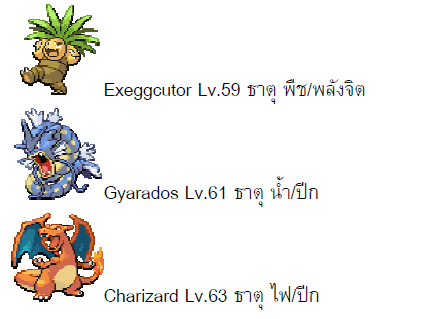
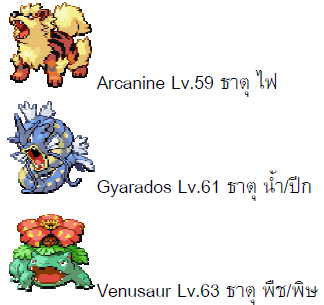
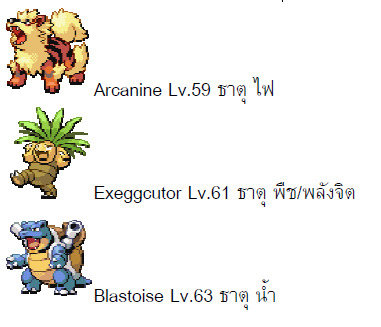
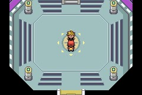
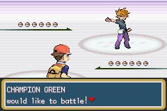

บทที่ 29 / 29
3ตัวที่เหลือขึ้นอยู่กับโปเกมอนที่เราเลือกตอนแรก
❖
1.ถ้าเราเลือกBulbasaurเป็นตัวแรก:

2.ถ้าเราเลือกSquirtleเป็นตัวแรก:

3.ถ้าเราเลือกCharmanderเป็นตัวแรก:

หลังจากจบแล้วดร.ออร์คิดก็จะพาเราไปบันทึกชื่อเป็นแชมป์คนใหม่ทันที และบันทึกเกมก่อนขึ้น Credit (รายชื่อผู้สร้าง)

